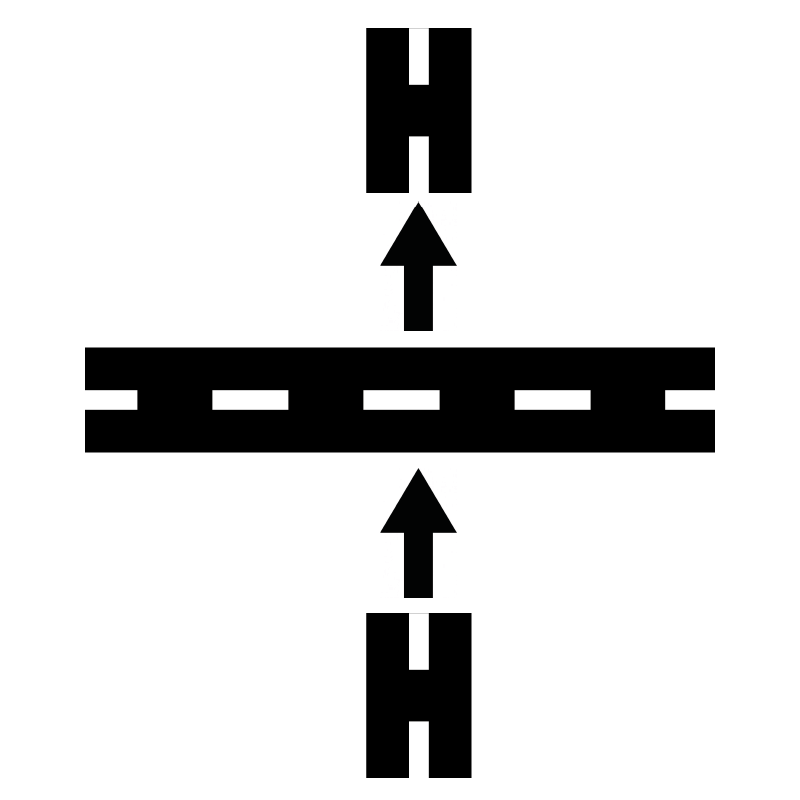

Indicaciones para llegar al salón de fiestas partiendo de Coca-Cola Coatepec
Seguir el camino hasta llegar a la calle Libertad alrededor de 1km.
Girar a la derecha en el siguiente camino al pasar por el Gotcha Coatepec. Nota: Si llegaste a Distribuidora de Aceros Coatepec o a Zucarmex, has pasado el camino.
Sigue el camino por alrededor de 1.6km.
Indicaciones para llegar desde autopista Xalapa-Coatepec con dirección a Coatepec.
Tomar libramiento a Córdoba.
Seguir el libramiento hasta llegar a la carretera Xalapa-Las Trancas.

Cruzar la carretera Xalapa-Las tracas entrando por el camino que se encuentra al frente.